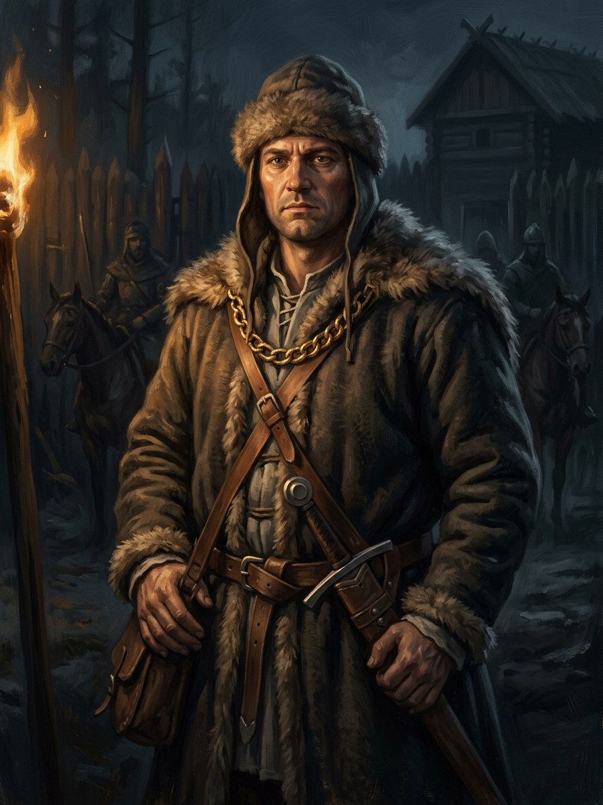

Baltramiejus Rogala (Oleśnicki’s envoy)¶
Summary¶
Baltramiejus Rogala, Oleśnicki’s envoy, meets the crown embassy at the Noteć ford and wears Henė’s golden chain from April 1429 to August 1430 (Book IV ch. 20, 23).
Baltramiejus Rogala (Oleśnicki’s envoy)

Baltramiejus Rogala (Oleśnicki’s envoy) · character¶
Tipas |
veikėjas |
Metai |
?–? |
Status |
Istoriniai duomenys |
Pastaba |
The envoy who meets the crown embassy at the Noteć ford in Book IV (Aug 1430); wears Henė’s golden chain. |
Appearance & tells¶
Twenty-nine, tall, black-haired, the son of a notary from Wiślica, with a face that, the bishop says, „does not look cunning“ and is therefore right for the errand. He writes what is said without drawing himself into it. Round his neck hangs the Kraków chancery’s badge: three swords in red wax. From April 1429 he also wears Henė’s golden chain under his shirt, pressed to his chest at the ford, and every night he hears only an inhale through clenched teeth, never the exhale, a sound that lengthens from one Ave to a full Miserere over fifteen months; when he learns the crown’s route in July 1430 it goes silent, „which is worse“ (Book IV ch. 20, 23).
Want · Need · Lie · Truth¶
Want (external) |
To carry out Oleśnicki’s errand: learn where the crown is made, who carries it and by what road, and stop it at the border. |
Need (internal) |
To discover what the chain means: that a gift with no price is a debt the receiver cannot count. |
Lie they believe |
A chancery clerk’s errand is only an errand; a chain given as ‚a gift, not a bribe‘ costs nothing. |
Truth they learn (or refuse) |
The chain ‚has not yet learned to exhale‘ and goes silent when he learns the route: the silence is the curse, and at the ford the crown is a chest of dry leaves. |
Arc by book¶
Book IV, ch. 20 (Mar 1429 - Jul 1430). Oleśnicki sends him to Buda with the king’s thanks to Sigismund as the official errand and, unofficially, to learn the crown’s secrets. He bribes the royal clerk Lászlo, receives the chain from Henė in a Buda corridor („count it yourself; I only write it down“), learns that the crown will leave Buda after St James’s day with forty horsemen under Hans Ebersdorf and cross the Noteć at the merchants‘ ford, and rides eight days to Kraków with the cipher letter. Oleśnicki sends him with Jan Czarnkowski’s two hundred men to hold the ford, kill no one, only stop, and tells him to wear the chain until September and then hand it to the cathedral.
ch. 23 (Aug-Sep 1430). He stands at the Noteć ford, addresses the border guards, presses the chain under his shirt and sees the crown chest of dry leaves; Henė tells Pilkoji „I never offered a lie“.
ch. 24. The dark-haired envoy with the sealed letter at Vilnius is the same man. After the ford the chain’s fate is „with the bishop’s people at Kraków“, returned to Henė in Book V ch. 19.
Power & magic¶
Tier 0: a lawyer’s son with no gift. His only contact with the magic is the golden chain (the Riga-made chain that strangled Kęstutis at Krėva), which Henė gives him. It is warm, bears the Riga mark of two crossed keys under a cross, and has „not yet learned to exhale“; its curse is the endless inhale heard only by the wearer. He pays no formal price, but the silence that replaces the sound after July 1430 is the cost.
Record vs saga¶
[Historical record]: Named in Book IV as the envoy; the border commander is the historical Jan Czarnkowski, not „Jakub of Gorlice“.
[The saga’s invention]: His errand as the chain-bearer and the scene at the ford.
Tarimas¶
bal-tra-MYE-yus ro-GAH-la · IPA /bɐltrɐˈmʲiɛjʊs rɔˈɡala/ · English sound-alike „bahl-trah-MYEH-yoos roh-GAH-lah“. The surname is Polish, stressed on the second syllable; the Lithuanian text writes Baltramiejus Rogala.
Appearances¶
Book IV: ch. 20 (his chapter), 23 (the ford), 24 (the sealed letter; unnamed) and the afterword.
He is not named in Book V; the chain’s later fate (returned to Henė) is told in Book V ch. 19.
Ryšiai
Holds: Auksinė grandinė (the strangling chain) (1429–1430) — Wears it on Oleśnicki’s orders; „has not yet learned to exhale“.
Sąsajos¶
graph LR
golden_chain["Auksinė grandinė (the strangling chain)"]
rogala["Baltramiejus Rogala (Oleśnicki's envoy)"]
rogala -->|Holds| golden_chain
style rogala stroke-width:3px